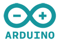

Introduksjon
Vi en er gjeng studenter på Informatikk: design, bruk og interaksjon ved Universitet i Oslo. Våren 2012 fikk vi en oppgave om å designe og utvikle en løsning ved bruk av prototype-verktøyet Arduino. GoGreen trappeteller er resultatet.
GoGreen består av Therese Slang, Jeongyun Choi, Hilde Bakken Reistad, Lena Drevsjø, Saq Imtiaz og Morten Ryum. Alle har bidratt med design, programmering, og evaluering.
GoGreen Trappeteller
GoGreen Trappeteller motiverer deg til å ta trappen. Vi teller deg hver gang du tar trappen, og presenterer dette på ulike måter når du når toppen av trappa.
{kind=link}
Trappetelleren har flere funksjoner. Det hele begynner når du kommer til et punkt hvor du har valget mellom å ta heisen eller trappen. En skjerm vil reagere på din tilstedeværelse, og komme med gode argumenter for å ta trappen. Når du begynner å gå opp trappen vil trappetelleren registrere at du er på vei. Når du når toppen, vil tavlen på toppen oppdateres automatisk med ditt bidrag. Er du heldig, kan du til og med vinne fete premier.
Premietrekning
For å motivere deg enda mer har vi i tillegg en premietrekning blant våre brukere. Hver gang du går i trappen er du med i trekningen om et kantinekort, gratis kaffe og andre fete premier.
Premietrekning fungerer slik at hver gang du passerer sensorene blir det gjort en trekning i systemet. Et tall fra 1-5000 blir trukket, og hvis ditt tall er det vinnende, forandres skjermen på toppen til en "premieskjerm" med en QR-kode og en URL. Scanner du QR-koden kommer du til en side hvor du fyller inn din kontaktinformasjon. Er du den første til å gjøre dette, får du tilsendt gavekort på e-post.
Arkitektur
{kind=link}
Systemet består av 2 avstandssensorer av typen xxx som er koblet til et Arduino Uno-brett. Når første sensor passeres, blir dette registrert i en buffer i Ardunio-brettet. Når andre sensor blir passert innen en tidsramme på x sekunder, registeres dette som en passert person. Har flere personer lagt seg i bufferen vil disse også telle. Deretter blir bufferen tømt og sendt over til Processing (Java) via seriellporten.
Processing sender så data over til Google Spreadsheets som gjør ulike kalkulasjoner, som f.eks antall kalorier, høydemeter, osv. Skjermen på toppen av trappene er koblet til en PC med internett-forbindelse. Denne PCen har en webside som ved hjelp av Google Charts tegner grafer ved data fra Google Spreadsheets. Disse grafene oppdateres hvert sekund ved hjelp av AJAX. Data fra Google Spreadsheets blir også brukt til å vise antall passerte personer over tre ulike tidsrammer: I dag, denne uken og totalt.
Nøkkeltall
- 6 måneder
- 55 intervjuer
- 200 observasjoner
- 5 prototyper
- 5 workshops
- 100 uventede problemer
Teknologier


Kildekode
Du finner siste versjon av kildekoden på GitHub.